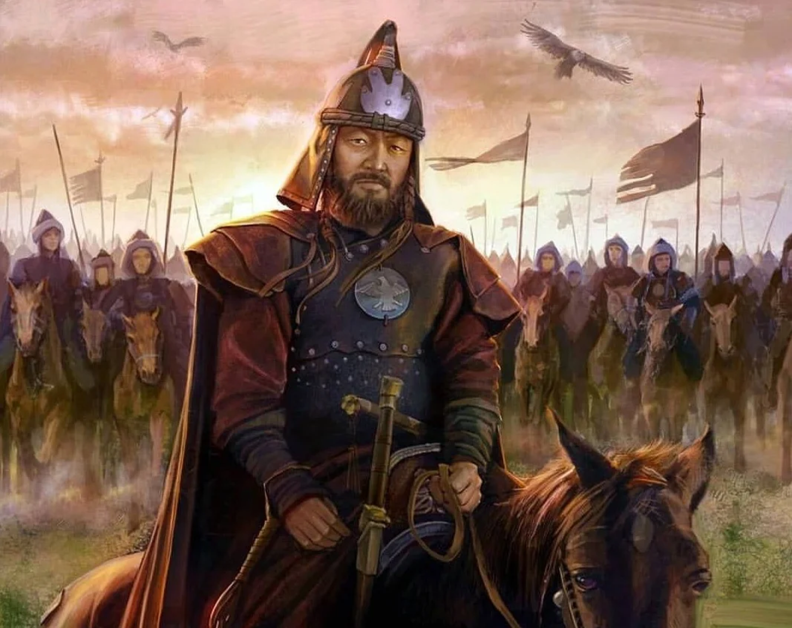
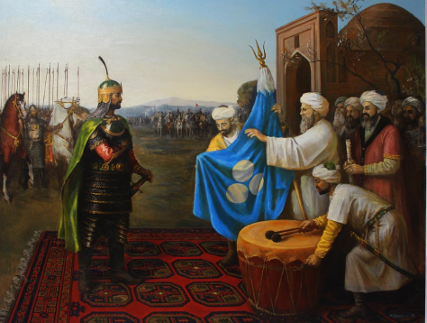

.svg)
TURKS


Branches of the Turks
All Turkic nations in the world are divided into 3 syllables or branches according to dialects
1
JOINT OGUZS
Turkmens, Azaybarjans, Kumuks, Balkars, Karachays, Gagauz,Crimean Tatars, Turks
2
JOINT KARLUKS
UIGURS, UZBEKS, AFGHAN UZBEK PEOPLE
3
JOINT KIPCHAK
KAZAKHS, KYRGYZ, KARAKALPAKS, BASHKIRTS, KALMYKS, NOGAYS, KHOGOSS, YAKUTS, SAKHALS,MOGULS


.svg)
.svg)
Distinguishing features
The Kipchak Turks are slightly different from the Qarluq and Oghuz Turks in appearance while most owls and swallows have large eyes and deep eyelids the eyes of most Kipchaks are relatively shallow with narrowed eyelids. According to Tukshinos ethnographers, almost all Turkic peoples are composed of only one branch of the three Turkic branches listed above. For example, the Kazakhs, Kyrgyz, and Karakalpaks have only the Kipchak branch. the Uyghurs, on the other hand, are the only Turkic nations to have a snowball effect. According to ethnographers, the only people in the world, the Uzbeks, are a Turkic people with three branches of the Turkic nation.
Ethnic composition of the Uzbek nation
In fact, the ethnic composition of the Uzbek nation consists of Oghuzs, Qarluqs, and Kipchaks. No other Turkic nation has all three branches of the Turkic peoples. The formation of a single Uzbek nation in one region, that is, in what is now Central Asia, began at least 1,500 and more than 4,500 years ago.

The spreadof the Turks
The arrival and spread of the Turks in Central Asia According to most oriental historians of the 19th and 20th centuries, such as Sturver, Alexander Yakubovsky, Nikolay Kuner, Gregory Grum Gjimaylo, and Lev Guminlyov, the Turks who first set foot in Central Asia were the Oguzs and Qarluqs. They came in the 4th century.


The state of the Huns founded by Metaxan
According to the Russian historian Gumilyov in his scientific monograph Ancient Turks (ancient Turks), this was caused by historical events until 71 BC. In 71 BC, the Hun state was crushed by China, resulting in the mass migration of the Huns, mainly from the Oguz and Qarluq tribes, to the west.The Oguzs and their allies, the Karluks, who fled from Chinese oppression, first settled in modern-day Kazakhstan, Kyrgyzstan, and Uzbekistan.
In the 4th century AD, the Huns crossed the Volga River and conquered the territories of present-day Russia, the Caucasus, the Mediterranean, Anatolia, Italy, France, and Germany.In the 5th century, in some sources of the Hun state, the son of a bead was called a father son and in the language of the Europeans, the ruler, known as Attila, imposed the order and taxes of the Turkish Khanate on the peoples of Europe who had overthrown their empire.
According to world historians, the Oguz and Qarluq Turks were the first to come to Central Asia, including the territory of modern Uzbekistan.and then the Kipchak Turks came and settled. The Oguzs and Qarluqs, who came to Central Asia long before the Kipchaks, abandoned the nomadic way of life over the years and settled down.
Mass migration of Kipchaks to Central Asia
The first wave of mass migration and settlement of the Kipchaks in Central Asia took place in the 13th century AD after the invasion of the Kipchak Turks by Genghis Khan (yes, Genghis Khan was a Kipchak ruler, not a Mongol ruler). was the ruler of the Kipchak Turks who did not accept it. if one of the Kipchak Turks has not converted to Islam, such a Kipchak Turk may consider himself a great ancestor of Genghis Khan.
13th century
Genghis Khan's empire was very close to today's Kazakhs, Kyrgyz, Karakalpaks and other Kipchak Turks. The only difference between the Kipchaks who invaded Central Asia with Genghis Khan and those of today's Kipchaks is in their religious beliefs, that is, if Chigizkhan and the Kipchak Turks who came with him believed in shamanism, or Buddhism, the modern Kipchaks believe in Islam. In short, in the 13th century, Muslim Oghuzs and Qarluqs living in Central Asia were invaded by non-Muslim Kipchak Turkic relatives.

Turkestan and the Ottoman Empire

Turkestan
Movarounnahr came to be seen as part of Turkestan, the Karakhanids, then the Khorezmshahs, the Chigatays, the Temurids, and the Shaybanids. According to Mahmud ibn Waln, "Turkestan is a vast and voluntary country, the length of which ranged from the banks of the Sayhun River to the banks of the Karamurun River, and was called Mongolia." The author writes that another name of Turkestan is Turan and its inhabitants are Turks. During this period, Mongolia covered East Turkestan, the Seven Seas, and the Altai. In the mid-19th century, Turkestan (more than 3 million square kilometers) was bordered on the west by the Ural Mountains and the Caspian Sea, on the east by the Altai Mountains and China, on the south by Iran and Afghanistan, and on the north by Tomsk and Tobolsk provinces. Turkestan is conventionally divided into Western (southern part of Kazakhstan, Uzbekistan, Tajikistan, Turkmenistan), Eastern (Xinjiang Uyghur Autonomous Region) and Afghan Turkestan (northern part of Afghanistan).
Ottoman Empire
In 1289, Osman, the ruler of the mountainous region, received the title of bek from the Seljuk sultan. Uthman, who came to power, immediately set out to conquer the Byzantine lands and made the first Byzantine city of Melangia his residence.Osman was born in a small mountain town in the Seljuk Empire. Uthman's father, Ertugrul Sultan, took the neighboring Byzantine lands from Ala-ad-Din. Ottoman Turkic tribes considered the conquest of neighboring territories a sacred act.After the escape of the overthrown Seljuk sultan in 1299, 'Uthman established an independent state based on his nobility. In the first years of the XIV century. The founder of the Ottoman Empire managed to significantly expand the territory of the new state and moved his residence to the castle city of Epishehir. Immediately after that, the Ottoman army invaded the Byzantine cities on the Black Sea coast and the Byzantine territories in the Dardanelles.
TURKS
.svg)
.svg)
.svg)
.svg)